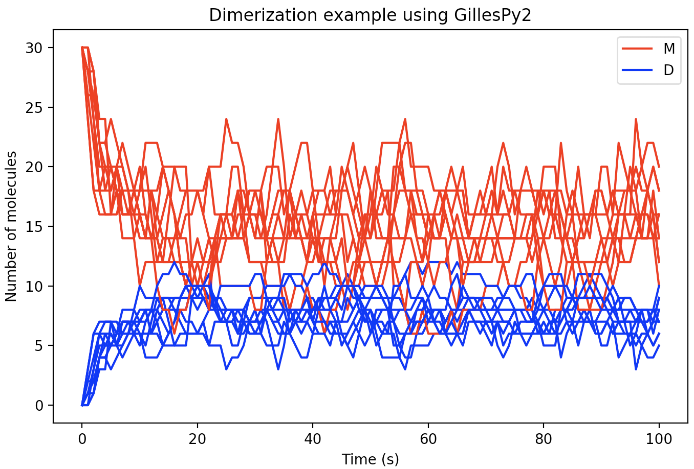

Basic usage¶
GillesPy2 provides simple object-oriented abstractions for defining a model of a biochemical system and simulating that model using efficient stochastic simulation algorithms. The basic steps to use GillesPy2 are:
Create a
GillesPy2.Modelcontaining molecular species, parameters, and reactions (or import it from an SBML file)Invoke the model’s
.run()method.
The run() method can be customized using keyword arguments to select different solvers, random seed, data return type and more.
For a graphic visualization of GillesPy2’s structure, refer to UML_CLASS_DIAGRAM.md in the GillesPy2 root directory.
Simple example of using GillesPy2¶
Dimerization is a process in which two molecules of some molecular species (known as a “monomer” in this situation – let’s call it “M” for short) come together to create a new molecule (call it “D”), but do so in a way that is reversible, meaning the combined structure can also decay or dissociate back into “M”. A simple model of the dimerization process represents it as two reactions: a reaction in which one molecule of “M” reacts with another molecule of “M” to form one new molecule (“D”), and another reaction in which a molecule of “D” breaks apart into two molecules of “M”. In terms of biochemical reactions, it looks like this (where kc and kd represent the rate constants for creation and dissociation of the dimer, respectively; M represents the number of molecules of “M”; and D is the number of molecules of “D”):
kc
2 M ⟷ D
kd
In GillesPy2, a model is expressed as an object having the parent class Model. Components of the model, such as the reactions, molecular species, and characteristics such as the time span for simulation, are all defined within the subclass definition. The following Python code represents our dimerization model using GillesPy2’s facility:
import numpy
import gillespy2
class Dimerization(gillespy2.Model):
def __init__(self, parameter_values=None):
# First call the gillespy2.Model initializer.
super().__init__(self)
# Define parameters for the rates of creation and dissociation.
k_c = gillespy2.Parameter(name='k_c', expression=0.005)
k_d = gillespy2.Parameter(name='k_d', expression=0.08)
self.add_parameter([k_c, k_d])
# Define variables for the molecular species representing M & D.
m = gillespy2.Species(name='monomer', initial_value=30)
d = gillespy2.Species(name='dimer', initial_value=0)
self.add_species([m, d])
# The list of reactants and products for a Reaction object are
# each a Python dictionary in which the dictionary keys are
# Species objects and the values are stoichiometries of the
# species in the reaction.
r_c = gillespy2.Reaction(name="r_creation", rate=k_c,
reactants={m:2}, products={d:1})
r_d = gillespy2.Reaction(name="r_dissociation", rate=k_d,
reactants={d:1}, products={m:2})
self.add_reaction([r_c, r_d])
# Set the timespan for the simulation.
self.timespan(numpy.linspace(0, 100, 101))
Given the class definition above, the model can be simulated by first instantiating the class object, and then invoking the run() method on the object. The following code will run the model 10 times to produce 10 sample trajectories:
model = Dimerization()
results = model.run(number_of_trajectories=10)
The format of the results from a run is is an array of values for different time points. There will be one subarray for each trajectory. In the current example, we can plot each of the 10 trajectories in the same figure using the following code:
import matplotlib.pyplot as plt
for index in range(0, 10):
trajectory = results[index]
plt.plot(trajectory['time'], trajectory['monomer'], 'r')
plt.plot(trajectory['time'], trajectory['dimer'], 'b')
With a few additional Python Matplotlib commands to create figure labels and such, we end up with a plot like this:
Example of selecting a different solver¶
GillesPy2 offers many alternative methods for solving the system of equations defined by a model. This example demonstrates the use of GillesPy2’s Hybrid Switching solver. It is designed to switch automatically and dynamically between continuous and stochastic representations of the molecular species in a model. This hybrid solver represents a species deterministically when it has a high population (thus executing the simulation more efficiently), and automatically switches to a stochastic representation at lower populations (for greater accuracy at low numbers). The result is an overall improved run-time over solely stochastic simulation.
First, let’s define a simple model to use in this example.
import numpy
import gillespy2
from gillespy2.solvers.numpy.basic_tau_hybrid_solver import BasicTauHybridSolver
# Define the model.
class AutomaticSwitchExample(gillespy2.Model):
def __init__(self, parameter_values=None):
# First call the gillespy2.Model initializer.
gillespy2.Model.__init__(self, name="Automatic Switch Example")
# Define parameters.
k1 = gillespy2.Parameter(name='k1', expression=3e-4)
k2 = gillespy2.Parameter(name='k2', expression=0.5e-2)
k3 = gillespy2.Parameter(name='k3', expression=2e-1)
self.add_parameter([k1,k2,k3])
# Define species.
A = gillespy2.Species(name='A', initial_value=400)
B = gillespy2.Species(name='B', initial_value=10000)
C = gillespy2.Species(name='C', initial_value=10000)
self.add_species([A, B, C])
# Define reactions.
r1 = gillespy2.Reaction(name="r1", rate=k1,
reactants={A:1,B:1}, products={B:1,C:1})
r2 = gillespy2.Reaction(name="r2", rate=k2,
reactants={B:1}, products={})
r3 = gillespy2.Reaction(name="r3", rate=k3,
reactants={C:1}, products={A:1})
self.add_reaction([r1,r2,r3])
# Set the timespan for the simulation.
self.timespan(numpy.linspace(0, 600, 601))
In GillesPy2, the selection of different simulation methods is achieved by supplying a value for the solver keyword argument to the run() method on Model. The hybrid solver is selected by passing the value BasicTauHybridSolver to the solver keyword argument:
# Create an instance of the model object, then run the simulation.
model = AutomaticSwitchExample()
results = model.run(solver=BasicTauHybridSolver)
The following code plots the results.
plt.figure(figsize=(15, 10))
for species in results[0]:
if species == 'time':
continue
plt.plot(results[0]['time'], results[0][species],
label='{0}'.format(species))
plt.title('Example Hybrid Switching Model')
plt.legend(loc='best')